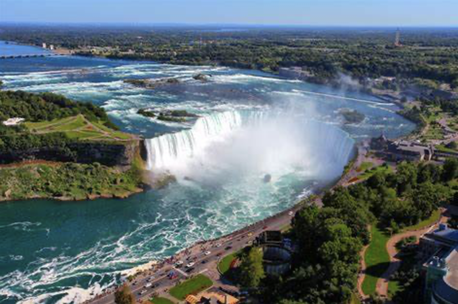
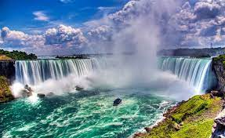
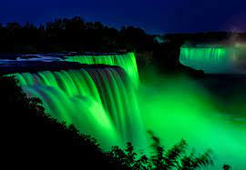
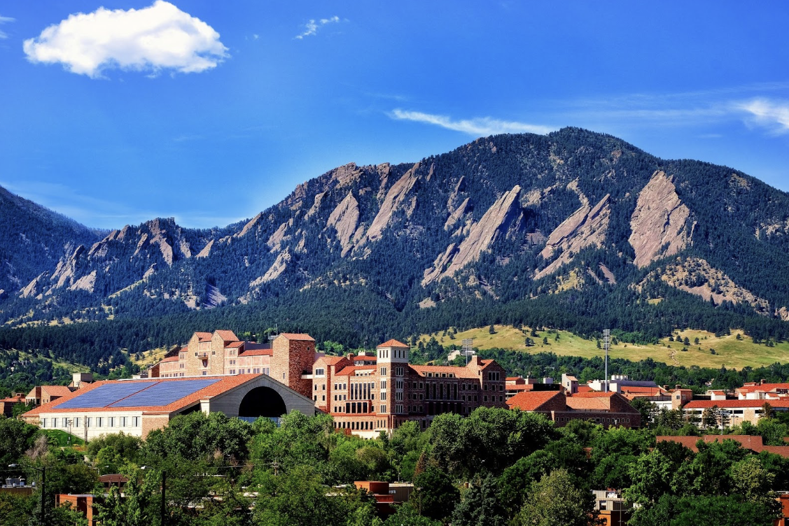
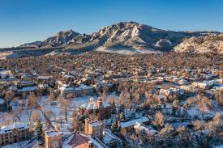
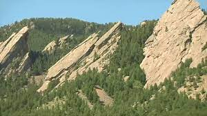
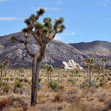
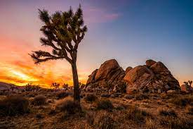
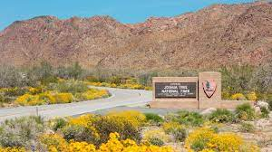
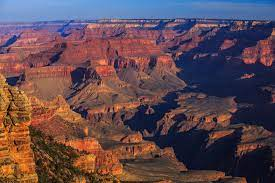

Niagara_Falls
Niagara Falls is located on the border between Canada and the United States. Connecting Lake Erie and Lake Ontario, Niagara Falls has the highest flow rate of any waterfall in North America.
Niagara Falls draws in thousands of visitors every year, and for good reason. As such, there are numerous things that you can see while you visit the falls, and it is very easy to make a full trip out of seeing this wonderful sight.
Photo Gallery
 Yellow Stone National Park

When it comes to things to do in South Lake Tahoe, you can shred down the mountain from 10,067 ft. at Heavenly Mountain Resort's peak or you can dive into the depths of Lake Tahoe. It's more than 1600 ft. deep, making it one of the deepest lakes in North America. Needless to say, there's plenty of things to do in Lake Tahoe above and below the surface.
All parts of Lake Tahoe are beautiful and have something unique to offer. South Lake Tahoe is popular for its ski resorts like Heavenly, Sierra at Tahoe and Kirkwood ski resorts. South Lake Tahoe is also popular for its restaurants, shopping, casino resorts and vibrant nightlife.
Photo Gallery


Boulder Colorado
Boulder, Colorado is where the Buffalo Roam. It is home to my Alma Mater, the University of Colorado! There are many hiking locations near the city center, most notably Chautauqua Park.
Boulder, Colorado is a small city of about 104,000 people, about a quarter of which are students that attend the University of Colorado. The city is a vibrant start-up hub that is a center for technology and innovation much like Ann Arbor is.
Photo Gallery
 Joshua Tree National Park
Joshua Tree National Park is a vast protected area in southern California. It's characterized by rugged rock formations and stark desert landscapes. Named for the region's twisted, bristled Joshua trees, the park straddles the cactus-dotted Colorado Desert and the Mojave Desert, which is higher and cooler.
Keys View looks out over the Coachella Valley. Hiking trails weave through the boulders of Hidden Valley.
Photo Gallery
 Grand Canyon National Park
The Grand Canyon is a steep-sided canyon carved by the Colorado River in Arizona, United States. The Grand Canyon is 277 miles long, up to 18 miles wide and attains a depth of over a mile.
The canyon and adjacent rim are contained within Grand Canyon National Park, the Kaibab National Forest, Grand Canyon-Parashant National Monument, the Hualapai Indian Reservation, the Havasupai Indian Reservation and the Navajo Nation.